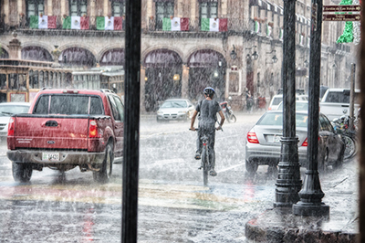
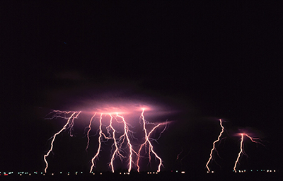
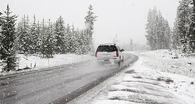

RealTime Weather Radar, seeks to provide weather and climate data, including weather prediction, and weather warnings for the citizens near or around Franklin, MU.
Gallery

Flooding in FranklinHeavy Clouds on the Horizon

Electrical Storm in GreenvilleEarly Spring Rain in Springville

Late Snow in North FranklinCalm Winter's Day